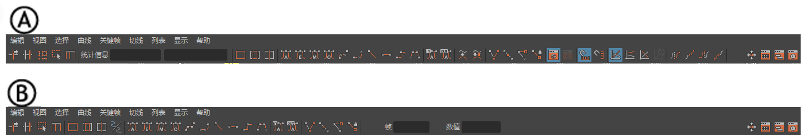
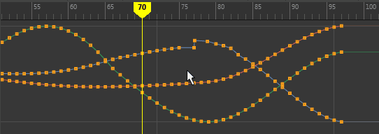

“曲线图编辑器”(Graph Editor)包括工具栏、大纲视图和图表视图。
- “曲线图编辑器”(Graph Editor)工具栏位于顶部，其中包括许多快速访问控件，用于在图表视图中处理关键帧和曲线。
- 左侧是“曲线图编辑器”(Graph Editor)大纲视图，您可以在其中找到表示动画曲线的“曲线图编辑器”(Graph Editor)节点。它类似于 Maya 的大纲视图，但有一些特定于“曲线图编辑器”(Graph Editor)的功能。
- 右侧是“曲线图编辑器”(Graph Editor)的图表视图，您可以在其中操纵曲线和关键帧。
“曲线图编辑器”(Graph Editor)菜单栏
“曲线图编辑器”(Graph Editor)菜单栏包含了许多工具和操作，支持在“曲线图编辑器”(Graph Editor)的图表视图内操纵动画曲线和关键帧。
“曲线图编辑器”(Graph Editor)工具栏

“曲线图编辑器”(Graph Editor)工具栏 (A) 默认 (B) 简单
“曲线图编辑器”(Graph Editor)工具栏包含许多常用选项（位于菜单中，也可通过在“曲线图编辑器”(Graph Editor)界面上单击鼠标右键找到）的图标。有关这些图标的功能描述，请参见“曲线图编辑器”(Graph Editor)工具栏。
注：
此工具栏有两个版本：默认版本具有一套完整的曲线编辑和显示选项，“简单工具栏”(Simple Toolbar)仅包含选定的编辑和显示选项。可以使用“曲线图编辑器”(Graph Editor)“视图”(View)菜单中的“简单工具栏”(Simple Toolbar)开关在这些工具栏之间切换。
“曲线图编辑器大纲视图”(Graph Editor outliner)
与 Maya 大纲视图一样，“曲线图编辑器大纲视图”(Graph Editor outliner)以大纲形式显示场景中所有可视通道的层次列表。可以展开和收拢层次中分支的显示；层次的较低级别在较高级别下缩进。在“曲线图编辑器大纲视图”(Graph Editor outliner)中，您可以选择图表视图中要显示的动画曲线。
在“曲线图编辑器”(Graph Editor)中，您可以按与 Maya 大纲视图相同的方式使用“搜索”(Search)功能查找通道。有关详细信息，请参见搜索和过滤节点。
“曲线图编辑器”(Graph Editor)图表视图

“曲线图编辑器”(Graph Editor)图表视图显示动画曲线分段、关键帧和关键帧切线。使用与 Maya 视口相同的导航热键，您可以通过图表视图进行平移和缩放，并通过向左或向右拖动当前时间标记沿顶部的时间标尺拖动动画。（若要在时间标尺下方的图表视图中拖动，请按 K 键释放光标。锁定光标旨在防止无意中移动关键帧/曲线。）
提示： 可以使用“曲线图编辑器”(Graph Editor)“视图”(View)菜单中的“时间标尺位置”(Time ruler position)设置在曲线图编辑器(Graph Editor)中将时间标尺的位置从图表视图顶部移动到底部。将时间标尺移动到底部可将其与下方的时间滑块(Time Slider)对齐。
“曲线图编辑器”(Graph Editor)的当前时间标记
“曲线图编辑器”(Graph Editor)的当前时间标记指示视口中当前显示的帧。沿图表视图顶部的时间标尺拖动该帧，即可在整个动画中进行拖动。

时间标记已锁定，因此您无法拖动图表视图。这可防止意外拖动曲线。若要解除锁定时间标记以便在图表视图中拖动，请在拖动的同时按 K 键。
